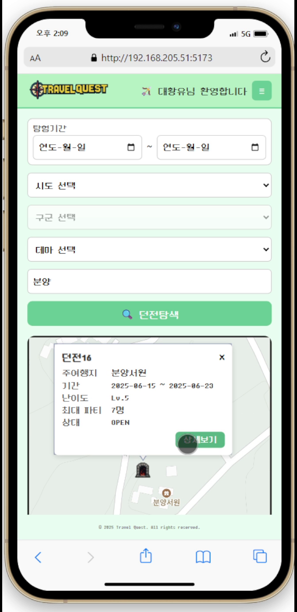
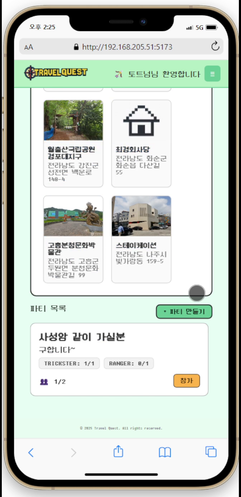

Travel Quest
Side Project — 1
여행을 RPG로 치환한 파티 매칭 서비스 — 던전·퀘스트를 매일 자동으로 만드는 파이프라인
여행지를 던전으로, 여행 계획을 퀘스트로, MBTI 성향을 직업으로 바꿔 낯선 사람과 파티를 이루는 게이미피케이션 여행 플랫폼입니다.
SSAFY 13기 관통 프로젝트(2인)에서 던전·퀘스트 도메인 설계와 자동 생성 파이프라인, 지도·인증 화면을 맡아
매일 00시 던전 10개 → MySQL 저장 프로시저로 명소 배정 → LLM 퀘스트 생성까지 사람 손 없이 돌아가는 흐름을 만들었습니다.

① 직업군 배정 — MBTI 결과로 8직업 중 1개

② 던전 탐색 — Kakao Map 마커 · 조건 검색

③ 던전 상세 — 명소 · 직업군별 파티 모집

④ 퀘스트 — LLM이 만든 미션 · 인증 제출
본인 담당 구현 던전 · 퀘스트 도메인 / 자동 생성 / 지도 / 인증 업로드
01
던전 자동 생성 — MySQL 저장 프로시저
MY PART
- 매일 00시
@Scheduled(cron = "0 0 0 * * ?")스케줄러가 던전 10개 생성 — 기간 0~8일·최대 인원 4~10명을 무작위로 결정 - 기간에서 난이도(1~5)·필요 명소 수(1~8)를 역산해 저장 프로시저
create_dungeon_with_attractions로 조건에 맞는 지역(area_code)을 랜덤 배정 → 1일 던전은 가볍게, 8일 던전은 8개 명소를 도는 구조가 자동으로 만들어짐 - 프로시저 호출과 퀘스트 저장을
@Transactional로 묶어, 실패 시 던전만 남는 상태를 차단
02
퀘스트 자동 생성 — Spring AI + 검증 계층
MY PART
- 던전에 배정된 관광지 목록을 JSON으로 직렬화해 ChatClient(gpt-4o-mini)에 전달, 관광지당 퀘스트 1개를
{title, description}배열로 요청 - 응답의 코드펜스 제거 → 역직렬화, 관광지 수와 퀘스트 수가 다르면
QuestGenerationException으로 중단 — LLM 응답을 그대로 신뢰하지 않는 검증 계층
03
던전 지도 · 조건 검색 — Kakao Map
MY PART
- 시도·구군·테마·키워드·기간 조건을 MyBatis 동적 SQL로 조회, 대표 관광지 좌표로 지도 마커 표시
- 던전 탐색·상세·퀘스트·인증 화면을 Vue 3로 구현 (Pinia 상태 · axios 인터셉터 위에서 동작)
04
퀘스트 인증 업로드 — 승인 워크플로
MY PART
- 인증 사진을 UUID 파일명으로
uploads/images에 저장(10MB 제한)하고/images/**리소스 핸들러로 제공 - 제출 PENDING → 관리자 승인 COMPLETED / 반려 FAILED, 던전 진행 상태는 MATCHING → IN_PROGRESS → COMPLETED / FAILED 4단계
아키텍처 — 본인이 만든 자동 생성 파이프라인은 초록 라인
Vue 3 SPA던전·파티·인증 화면
Kakao Map SDK던전 위치 마커
STOMP Client파티 실시간 채팅
→
Spring Boot 3.4.5Controller · Service · MyBatis Mapper
Scheduler 00:00던전 10개 생성 · 기간→난이도 역산
Spring AI ChatClient관광지 JSON → 퀘스트 1개/명소
→
MySQL 8저장 프로시저 create_dungeon_with_attractions · 18 테이블
OpenAI gpt-4o-mini코드펜스·개수 검증 후 저장
Redis · MongoDB · 파일 저장소토큰·접속 상태 / 채팅 / 인증 사진
왜 저장 프로시저인가 — 던전 1개와 명소 N개 매핑을 한 번의 호출로 원자적으로 만들고, 랜덤 지역 선택·조건 필터를 DB에서 처리해
애플리케이션은 생성 조건만 넘기도록 분리했습니다. 규모는 Java 128개 파일 · Vue 35개 파일 · MyBatis 매퍼 11종 · 테이블 18개입니다.
10개 / 일
00시 자동 생성되는 던전
기간 0~8일 · 난이도 1~5
기간 0~8일 · 난이도 1~5
18테이블
MySQL 스키마 ·
MyBatis 매퍼 11종
MyBatis 매퍼 11종
128Java
Java 파일 · Vue 35개 파일
도메인 9개
도메인 9개
4단계
던전 진행 상태
+ 인증 승인/반려 워크플로
+ 인증 승인/반려 워크플로
팀 공동 구현 2인 · 신승용
- 인증 — Kakao/Naver OIDC 로그인, JWT 액세스 15분 · 리다이렉트/리프레시 14일(Redis), 로그아웃 블랙리스트
- 실시간 — STOMP 파티 채팅(메시지 MongoDB · 접속 상태 Redis), 파티 도메인
- 매칭 — 파티 참가 검증 3단계(전체 정원 → 중복 → 직업군별 정원), MBTI·직업군 매핑
이 프로젝트에서 남긴 것
콘텐츠를 사람이 만들지 않아도 서비스가 굴러가는 구조를 2인 팀에서 직접 설계했습니다.
LLM을 붙일 때는 결과를 그대로 저장하지 않고 개수·형식 검증을 코드로 두는 습관을 얻었고,
DB가 할 일(랜덤 배정·조건 필터)과 애플리케이션이 할 일(검증·트랜잭션)을 나누는 판단을 경험했습니다.